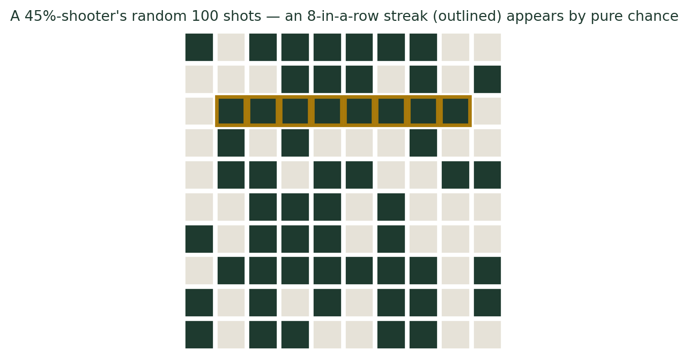
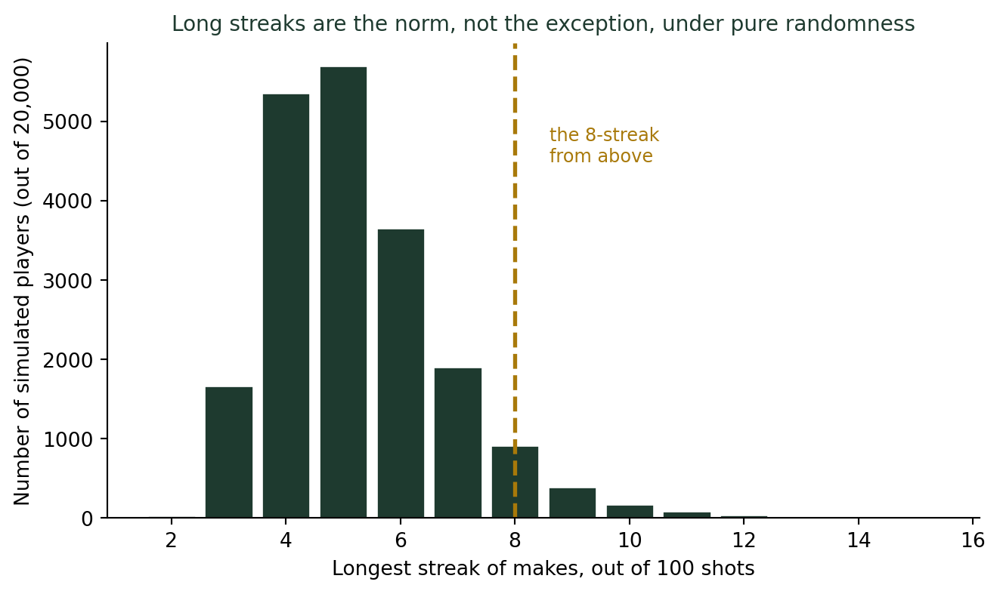

(사람의 직관은 왜 통계와 충돌하는가) 농구에서 ’슛 감각이 올랐다’는 말은 사실일까?
통계기초
확률
행동통계
3점슛을 연달아 넣으면 중계진은 ’슛 감각이 물올랐다’고 말한다. 그런데 성공확률이 고정된 가상의 슈터를 컴퓨터로 시뮬레이션해봐도 8연속 성공 같은 ’몰아넣기’는 어렵지 않게 나온다. 1985년 코넬대의 유명한 연구와, 그 결론을 30년 만에 뒤집은 2015년 재분석까지 함께 살펴본다.
“지금 손이 완전히 풀렸네요”
농구 중계를 보다 보면 한 선수가 3점슛을 서너 개 연속으로 넣는 순간, 캐스터의 목소리 톤이 달라진다. “지금 완전히 물올랐습니다”, “감각이 살아있어요”, “패스를 계속 몰아줘야 합니다.” 이른바 핫핸드(hot hand) — 방금 몇 개를 성공시킨 선수는 다음 슛도 성공할 확률이 높다는 믿음이다. 이 표현은 한국 농구 중계에서도 “핫핸드”라는 말 그대로 쓰일 만큼 널리 퍼져 있다.
직관적으로는 당연해 보인다. 리듬을 타는 것 같고, 자신감이 붙는 것 같고, 수비도 위축되는 것 같다. 그런데 이 직관을 통계학의 언어로 옮기면 이런 질문이 된다. “이 선수의 슛 성공 여부는 정말로 바로 직전 슛의 결과에 영향을 받는가, 아니면 그냥 매번 독립적으로 일어나는 우연인가?”
성공확률이 고정된 가상의 슈터를 만들어보자
이 질문에 답하기 가장 간단한 방법은, 매 슛마다 성공확률이 정확히 똑같고, 직전 결과와 완전히 무관한 가상의 슈터를 컴퓨터로 만들어 보는 것이다. 성공확률 45%인 이 가상 슈터에게 100번 슛을 던지게 시뮬레이션하면 이런 결과가 나온다.
초록 칸은 성공, 회색 칸은 실패다. 금색 테두리로 표시한 구간을 보면 8연속 성공이 나온다. 이 슈터에게는 “기억”이 전혀 없다. 46번째 슛을 넣을 확률은 45번째 슛이 들어갔든 빗나갔든 똑같이 45%다. 그런데도 눈으로 보면 영락없이 “몰아넣는” 구간이 보인다.
이런 몰아넣기는 얼마나 “특별”한가
혹시 방금 본 그림이 우연히 뽑은 극단적인 사례는 아니었을까? 같은 조건(성공확률 45%, 100번 슛)의 가상 슈터를 2만 명 만들어, 각자의 최장 연속 성공 기록을 모아보면 답이 나온다.

성공확률이 전혀 변하지 않는 순수한 무작위 슈터라 해도, 100번 중 5연속 성공은 3명 중 2명꼴로 나온다. 6연속도 세 명 중 한 명꼴이다. 8연속처럼 방송에서 “물올랐다”고 흥분할 만한 기록조차, 열두 명 중 한 명꼴로 순전한 우연만으로 나타난다. 한 경기, 한 선수만 보면 드물어 보이지만, 한 시즌 내내 여러 선수가 수십 번씩 슛을 쏘는 KBL·NBA 전체로 보면 이런 “몰아넣기”는 매 경기 어딘가에서 반드시 일어나는 흔한 사건이다.
우리 뇌는 왜 이 패턴에 속는가
이 착시에는 이름이 있다. 소수의 법칙(law of small numbers) — 사람들은 작은 표본에서도 전체 모집단(여기서는 “이 선수의 진짜 실력”)의 성질이 그대로 드러난다고 믿는 경향이 있다. 동전을 100번 던지면 앞면 6연속 정도는 흔하다는 사실을 머리로는 알아도, 실제로 그 장면을 눈앞에서 보면 “이건 우연이 아니다”라는 확신이 본능적으로 앞선다. 무작위성 자체가 원래 “덩어리져” 보인다는 사실을, 우리 직관은 좀처럼 받아들이지 못한다.
1985년의 연구, 그리고 30년 만의 반전
이 질문을 처음 본격적으로 검증한 사람은 심리학자 토머스 길로비치(Thomas Gilovich)와 동료들이었다. 1985년 발표한 논문에서 이들은 미국 프로농구 필라델피아 세븐티식서스의 실제 슛 기록과, 코넬대학교 농구부원들을 대상으로 한 통제된 자유투 실험 데이터를 분석했다. 결론은 명확했다. 직전 슛의 성공 여부는 다음 슛의 성공 확률에 유의미한 영향을 주지 못했다. 선수 본인과 팬들 모두 “핫핸드는 확실히 존재한다”고 굳게 믿었지만, 데이터는 그 믿음을 뒷받침하지 않았다.
이 연구는 이후 30년간 “핫핸드는 인지적 착각”이라는 정설로 자리 잡았다. 그런데 2015년, 경제학자 조슈아 밀러(Joshua Miller)와 애덤 산주르호(Adam Sanjurjo)가 이 결론에 통계적 허점이 있다는 사실을 발견했다. 유한한 길이의 시퀀스에서 “직전 슛이 성공이었던 경우만 골라 다음 슛 성공률을 계산”하면, 그 계산 방식 자체에 성공률을 실제보다 낮게 추정하게 만드는 미묘한 편향이 숨어 있었던 것이다. 이 편향을 보정하자, 원래 데이터에서도 핫핸드 효과가 다시 나타났다 — 다만 사람들이 믿는 것보다는 훨씬 작은 크기로.
그래서 결론은?
- 직관이 완전히 틀린 것은 아니다. 보정된 재분석에 따르면 아주 작은 핫핸드 효과는 실제로 존재할 수 있다.
- 그러나 그 크기를 사람들은 심하게 과장한다. 캐스터가 “완전히 물올랐다”고 표현할 만큼 극적인 효과는 어떤 분석에서도 나타나지 않는다.
- 긴 연속 기록 자체는 증거가 되지 못한다. 성공확률이 고정된 순수한 우연만으로도 8연속, 심지어 그 이상도 심심찮게 나온다. 연속 기록을 봤다면, 그 다음 질문은 “얼마나 놀라운 기록인가”가 아니라 “순전한 우연이었다면 이 정도 기록이 나올 확률은 몇 %인가”여야 한다.
더 깊이: 슛 하나하나는 독립적인 베르누이 시행이다
강의노트 〈수리통계학 5. 유명분포 — 베르누이분포〉는 결과가 성공·실패 두 가지뿐이고, 각 시행이 서로 독립적이며, 성공확률이 매번 동일하게 유지되는 실험을 베르누이 시행으로 정의한다. 이번 글에서 시뮬레이션한 가상 슈터가 정확히 이 정의를 따른다 — 45%라는 확률이 매 슛마다 그대로 유지되고, 이전 결과가 다음 결과에 아무 영향을 주지 않는다. 핫핸드 논쟁의 핵심은 결국 이 정의 자체를 검증하는 문제다. 실제 슛 데이터가 “독립적인 베르누이 시행들의 나열”이라는 가정과 통계적으로 구별되지 않는다면, 연속 성공은 그저 이항분포가 만들어내는 자연스러운 무늬일 뿐이다.
결론: 연속 기록을 보거든, 먼저 이렇게 물어라
나는 학생들에게 이 시뮬레이션을 직접 코드로 돌려보게 한다. 시드값만 몇 번 바꿔봐도 8연속, 9연속 성공이 어렵지 않게 나오는 걸 보고 나면, “손이 풀렸다”는 표현을 이전과 같은 마음으로 듣기 어려워진다. 그렇다고 핫핸드가 완전한 허구라는 뜻은 아니다 — 2015년의 재분석이 보여주듯, 아주 작은 진짜 효과는 있을 수 있다. 다만 우리 눈에 보이는 극적인 “몰아넣기”의 대부분은, 그 작은 진짜 효과가 아니라 무작위성이 원래 가진 덩어리짐일 가능성이 훨씬 크다. 연속 기록을 보거든 감탄하기 전에 먼저 물어보라. “이 정도 연속은, 순전히 운이었어도 몇 번에 한 번은 나오는 흔한 일 아닌가?”
참고 자료
- Gilovich, T., Vallone, R., & Tversky, A. (1985). The hot hand in basketball: On the misperception of random sequences. Cognitive Psychology, 17(3), 295-314.
- Miller, J. B., & Sanjurjo, A. (2015). Surprised by the hot hand fallacy? A truth in the law of small numbers. Econometrica, 86(6), 2019-2047.
- Hot hand — Wikipedia